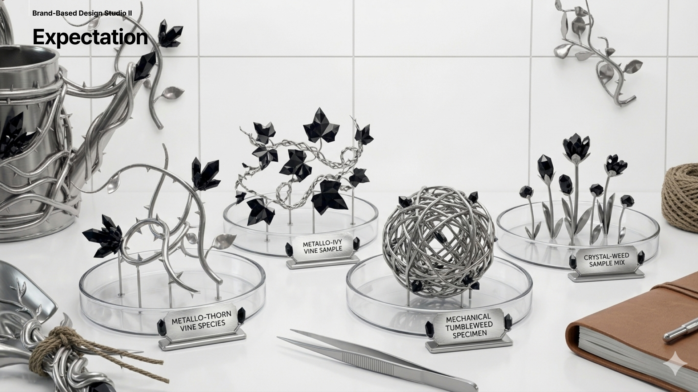
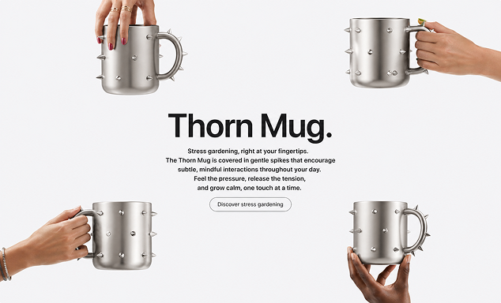
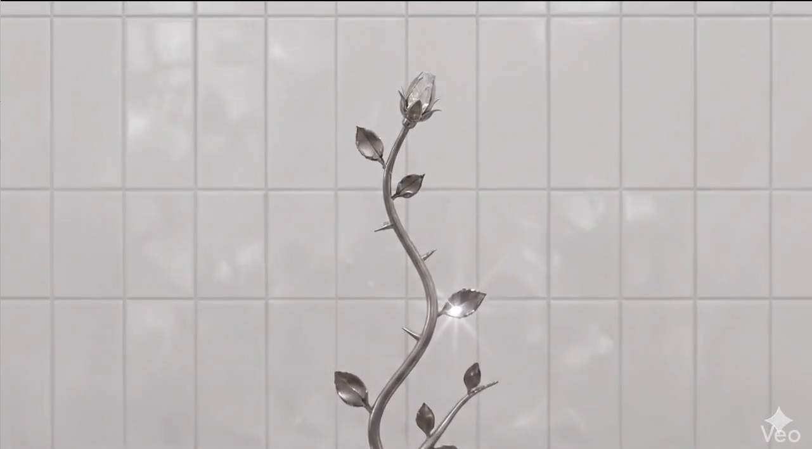
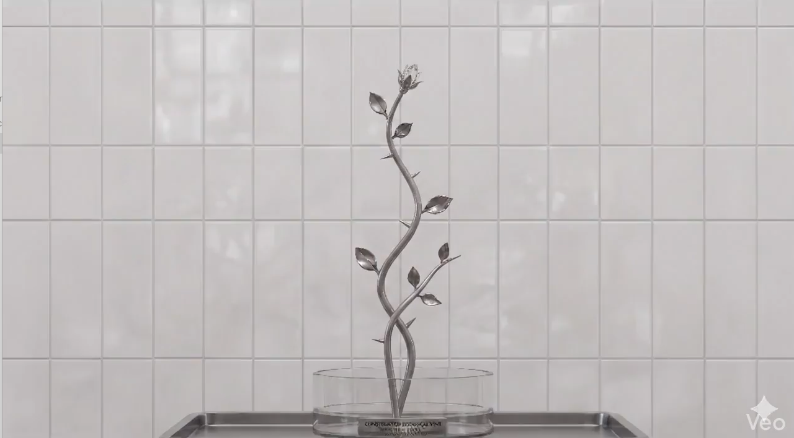

Stress Vine
62/100
Brand-Based Design Studio II
Stress Gardening.
A hybrid stress analysis lab for measuring tension, recording the day, and translating that state into a collectible specimen ritual.
Live Scanning...
경과 시간: 0s
오늘 하루는 어땠나요? 가장 스트레스를 받았던 일은 무엇이었나요?
0 / 300자 권장
Analysis Result.
Analysis Time
--
Typing Speed
--
Error Rate
--
Stress Index
--
Recommend Shop
Featured fake goods matched to the current lab mood.

Featured archive
Specimen board
Curated object set for the current stress profile.
Recommended goods
Thorn Mug
A tactile daily object selected for subtle release.Recommended set
Chrome-thorn bundle.
Rotating combinations of tools, objects, and archive items.Total Shop
The full archive of experimental goods and specimen forms.


Chrome-Thorn Set
Crystal Weed Mix
About Project
Stress Gardening turns personal tension into a collectible laboratory fiction.
Project Story
A speculative shop for stress-shaped objects.
The project begins with analysis, shifts into a gardening lab, then reframes emotional residue as curated goods, archived specimens, and an expandable fake commerce system.
- 01Analysis
Measure mood, language, and friction.
- 02Gardening Lab
Grow and sculpt a live chrome-thorn specimen.
- 03Recommend Shop
Surface featured objects tied to the result.
- 04Total Shop
Browse the larger project archive and goods index.